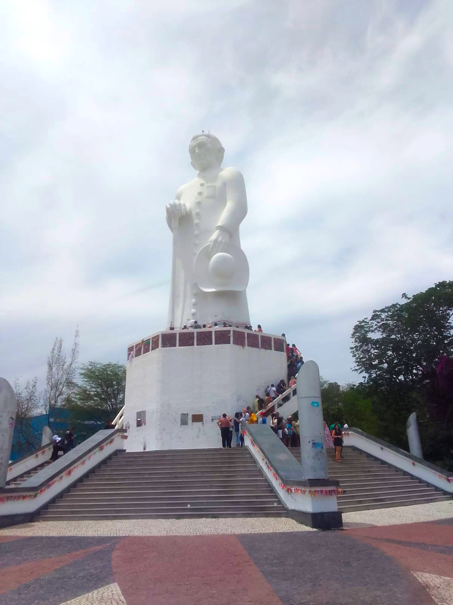
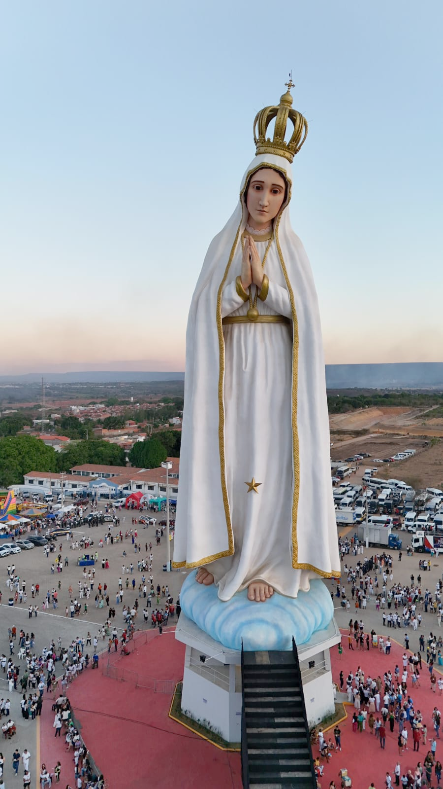
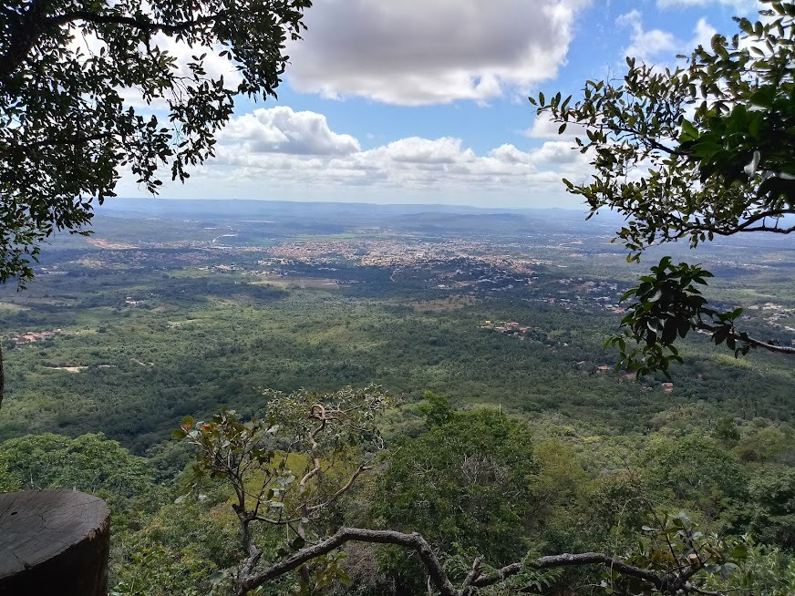
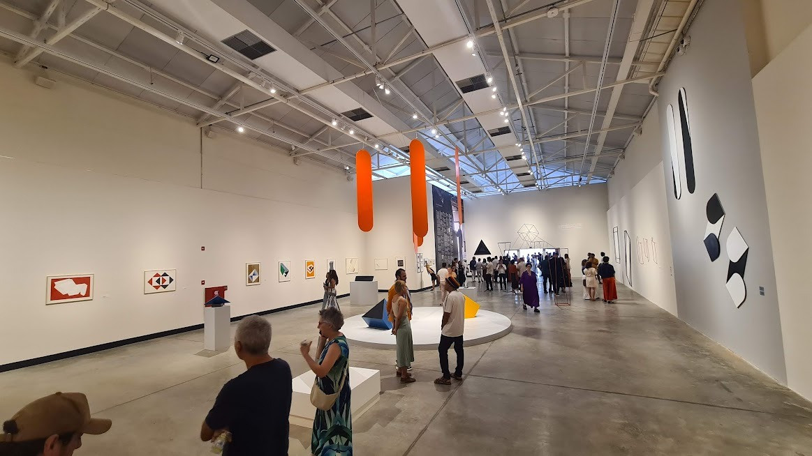

A "Princesa do Cariri" aguarda por si. Uma imersão em história, cultura, ecoturismo e ciência no coração do Nordeste brasileiro.
Berço de mentes brilhantes e de espírito revolucionário, o Crato desempenha um papel de vanguarda na história do Brasil. Foi palco de movimentos libertários cruciais, como a Revolução Pernambucana de 1817, imortalizada pela figura heroica de Bárbara de Alencar, a primeira prisioneira política do país.
Tamanha era a força desse ideal libertário que, no dia 03 de maio de 1817, o Crato proclamou-se uma república independente, rompendo com a coroa portuguesa e formando um governo provisório incríveis cinco anos antes do histórico grito do Ipiranga. Participar da ERCEMAPI no Crato é respirar essa atmosfera de inovação contínua que une a ousadia secular ao futuro tecnológico.
O Cariri é movido pela devoção. E é aqui, no Crato, que se encontra o verdadeiro berço da fé nordestina: a cidade é a terra natal do Padre Cícero Romão Batista, nascido a 24 de março de 1844, a figura central do misticismo e da religiosidade de todo o Ceará.
Reverenciando essa força espiritual, o Crato inscreveu o seu nome na história do turismo mundial com a inauguração, no final de 2025, da maior estátua de Nossa Senhora de Fátima do mundo. Este impressionante monumento de 54 metros de altura atrai milhares de visitantes, oferecendo uma vista panorâmica deslumbrante e consolidando-se como uma paragem obrigatória para os congressistas.


Para os amantes da natureza, o Crato é um verdadeiro oásis no semiárido. A cidade é a porta de entrada para a Floresta Nacional do Araripe-Apodi (FLONA) — a primeira floresta nacional criada no Brasil. As suas trilhas verdes exuberantes levam a cascatas refrescantes, como as do Sítio Lameiro e da Batateira.
Oásis Paleontológico: A cidade está inserida no território do Geopark Araripe, o primeiro geoparque das Américas reconhecido pela UNESCO. É a sua oportunidade de explorar geossítios de importância mundial, repletos de fósseis que contam a história da Terra há milhões de anos.

O Crato pulsa arte. A cidade é um "caldeirão cultural" onde o autêntico folclore nordestino ganha vida através do Reisado de Couro, das bandas de pífanos e da poesia de cordel. Durante os seus dias de evento, aproveite para visitar o Centro Cultural do Cariri Sérvulo Esmeraldo, um dos maiores e mais modernos complexos de arte, ciência e exposições do Brasil.

A experiência estende-se para além do Crato. A apenas alguns minutos de distância, a região forma um mosaico perfeito de turismo. Na vizinha Juazeiro do Norte, poderá subir a majestosa Colina do Horto para visitar a imponente estátua de Padre Cícero e conhecer a verdadeira arte da xilogravura na Lira Nordestina.
Em Barbalha, o Complexo Ambiental Mirante do Caldas surpreende com as suas piscinas de águas termais e o teleférico com vistas privilegiadas da Chapada. Um pouco mais adiante, as charmosas cidades de Santana do Cariri e Nova Olinda convidam-no a explorar o renomado Museu de Paleontologia, lar de fósseis com mais de 100 milhões de anos, e a encantadora Fundação Casa Grande – Memorial do Homem Kariri. Uma imersão obrigatória na alma do Nordeste!
A XIV ERCEMAPI 2026 vai muito além das palestras. Planeie a sua viagem com antecedência, traga a sua câmara fotográfica e prepare-se para ser acolhido pela famosa hospitalidade cearense.